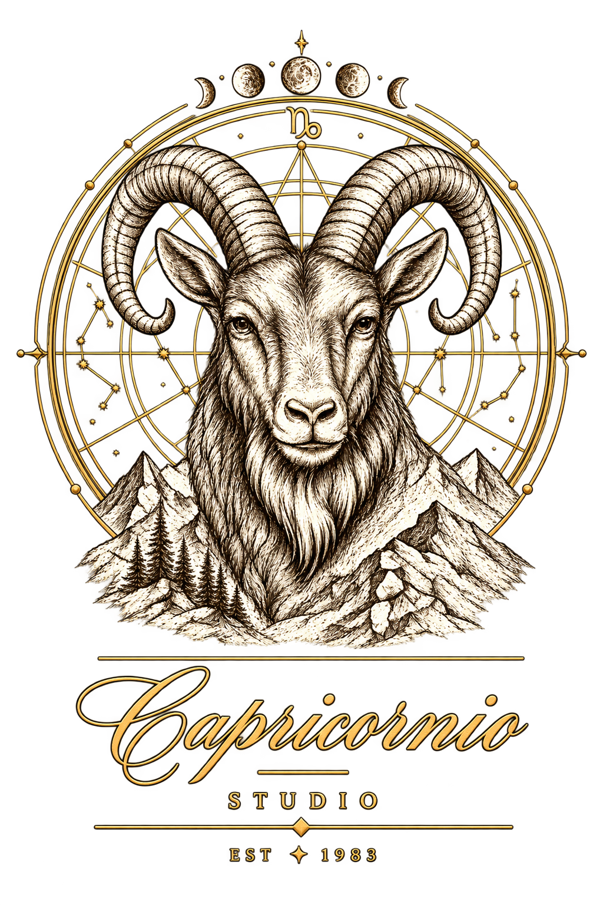
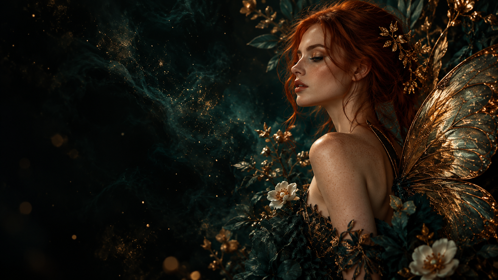
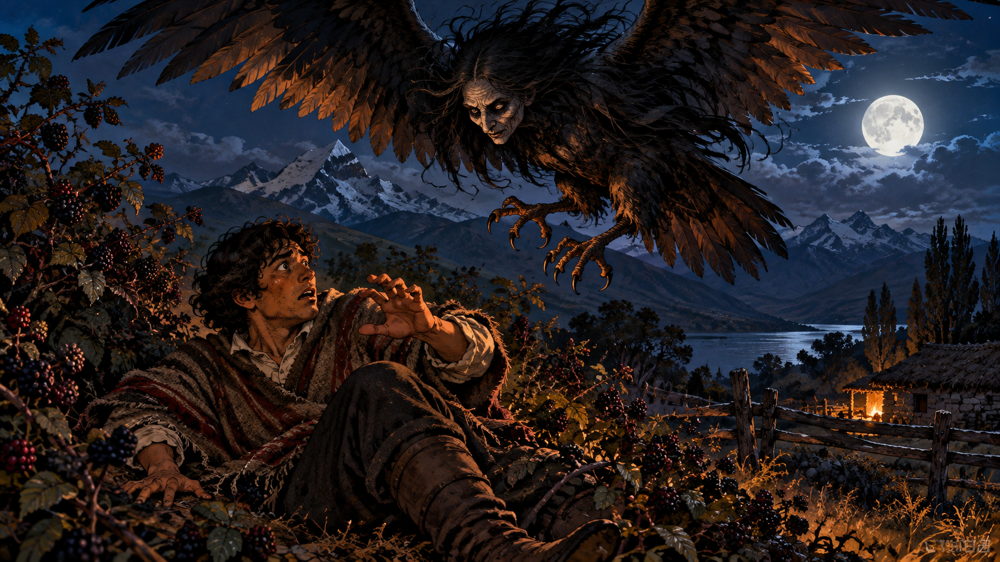
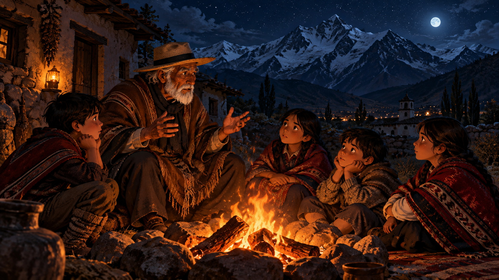

Imágenes con IA
Retratos conceptuales, ilustración, arte para marcas, personajes y escenas que convierten una idea en una imagen poderosa.
↗
ESTUDIO CREATIVO · LOS ANDES, CHILE
Creamos imágenes, videos e historias animadas donde la tecnología se encuentra con la emoción.
IMAGINACIÓN CON DIRECCIÓN
En Capricornio Studio 83 damos forma visual a historias, recuerdos y mundos nuevos. Combinamos creación asistida por inteligencia artificial, criterio artístico y trabajo humano para producir piezas con identidad propia.
Conoce lo que hacemos ↗02 / LO QUE CREAMOS
De la primera imagen al universo completo: elegimos el formato que mejor expresa tu historia.
Retratos conceptuales, ilustración, arte para marcas, personajes y escenas que convierten una idea en una imagen poderosa.
↗Secuencias visuales, piezas audiovisuales y contenido para comunicar con atmósfera, ritmo e intención.
↗Relatos ilustrados, personajes y escenas en movimiento para recuerdos personales, proyectos editoriales y nuevas narrativas.
↗03 / UNIVERSOS VISUALES
Una muestra conceptual creada para explorar el lenguaje visual del estudio.



Piezas conceptuales originales. Cada encargo se desarrolla según su historia, estilo y objetivo.
PROYECTO NARRATIVO / EN DESARROLLO
Un relato de memoria y horror rural andino: un abuelo, una fogata y una noche de juventud marcada por el TueTue.
Imágenes individuales creadas para este relato. La película animada está en desarrollo.
NUESTRA MIRADA
La tecnología abre posibilidades.— CAPRICORNIO STUDIO 83
La historia les da sentido.
04 / CÓMO TRABAJAMOS
Escuchamos lo que quieres transmitir, a quién va dirigido y qué emoción debe provocar.
Definimos estilo, referencias y dirección narrativa antes de dar forma a las piezas.
Producimos, revisamos y refinamos imágenes o secuencias hasta que la historia cobre vida.
05 / EMPECEMOS
¿Tienes una imagen en mente, un recuerdo que contar o un mundo por crear? Hablemos de tu proyecto.